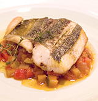

ホットなスポット
すすきの（札幌）
国分町（仙台）
恵比寿（東京）
吉祥寺（東京）
渋谷（東京）
六本木（東京）
銀座（東京）
新宿（東京）
池袋（東京）
原宿（東京）
祇園・木屋町・先斗町（京都）
梅田（大阪）
心斎橋・なんば（大阪）
元町（神戸）
天神（博多）
国際通り（那覇）
ジャンルで選ぶ


こだわりで選ぶ
ライターのおすすめ グルメキャンプのライター陣 行きつけの最強グルメスポットを紹介!

全国から仕入れた蕎麦の実を、産地ごとの特性に合わせて挽き、 持ち味を最大限に引き出す至高のそば。フレンチの技法も加えて 繰り出されるSOBAコースは意外性に富んでいるが、実は基本に忠実な仕事がされています。 香ばしい焼きそばがきもおすすめ。

トルコ料理というと日本ではドンドルマ（トルコ風アイス） くらいしか知られていませんが、実は世界三大料理の一つ。ハーブやヨーグルトを多用し、 香辛料たっぷりのその味わいはまさに異国情緒。香味と酸味を中心に据えた味わいをご堪能ください。
ユーザーレビュー

食いしん坊主
男性・東京都
レビューの高評価に期待して伺ったのですが、接客態度があまりに悪く印象は最悪。
確かにお料理は美味しかったですが、凝った仕事をしていても、そもそもどのような素材を利用して
どんな調理法で供されたものなのか一切説明がなかったので狐につままれたような印象でした。


スイーツ大好き
女性・兵庫県
以前から友人と話題に上がっていたお店だったので楽しみにしていました。 ヴィンテージの家具や赤で統一されたモダンな内装。あらゆるディテールに ミッドセンチュリーモダンを意識した作りでオーダー前にすでに満足! カフェメニューも充実していて、近くのパティスリーから仕入れているケーキも 美味しゅうございました。


キャンプ太郎さん
男性・東京都
 ポイント130pt
ポイント130pt
 ランクプレミアム
ランクプレミアム